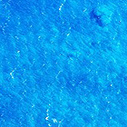
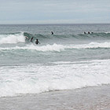
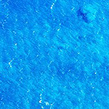
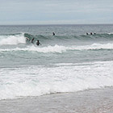

glossify.js
glossify.js is a jQuery plugin that transforms any image into a beautiful glossy sphere.
 

glossify.js is a jQuery plugin that transforms any image into a beautiful glossy sphere.
 
Using glossify.js couldn't be easier: just include the script and use some special attributes with any image you want to glossify. No need to call any script or initialize anything.
Step 1: include JQuery and glossify.js in your page
<script src="jquery.js"/> <script src="glossify.js"/>
Step 2: every image you want to glossify just include the data-gloss attribute
<image src="g.jpg" data-gloss/>

Changing the color is easy: just use the data-glosscolor attribute. If not provided, the default color is black.
<image src="g.jpg" data-gloss data-glosscolor="#ff0000"/>
You can also change the alpha by using the data-glossalpha attribute. If not provided, the default alpha value is 1 (no transparency).
<image src="g.jpg" data-gloss data-glosscolor="#ff0000" data-glossalpha="0.5"/>